← Index · ← Previous · Next →
Authors: Xiangrui Hou, Fangyu Wang, Zhaoxin Wu, Shuming Zhang, Shan-Zhong Li, Lei Ying, Haiqing Lin, Baile Zhang, Zhi Li, Shi-Liang Zhu, Zhaoju Yang
Type: both · Category: disordered systems and neural networks · PDF: https://arxiv.org/pdf/2605.21983v1
Analysis basis: full PDF text, analyzed in chunks
Topic relevance: non-equilibrium dynamics 3/5 · analog quantum simulation 2/5 · non-equilibrium universality 2/5 · quantum optics experiment 2/5
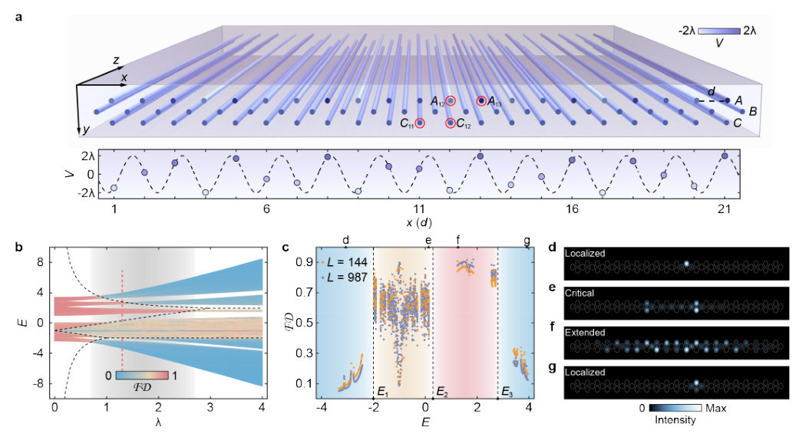
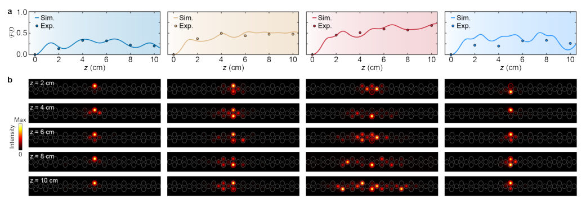
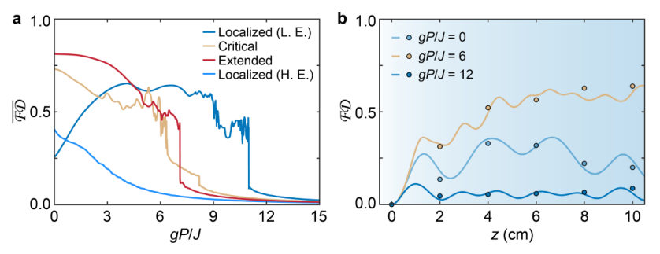
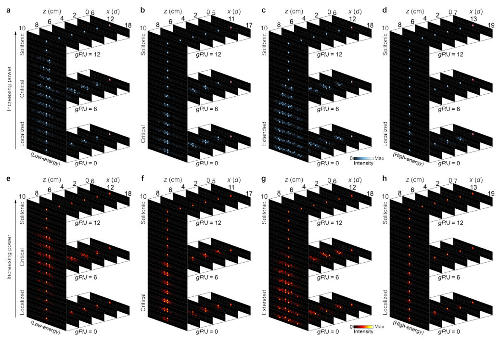
Summary. This paper experimentally demonstrates a tripartite phase in a nonlinear quasiperiodic photonic lattice where localized, critical, and extended states coexist. It reveals that nonlinearity acts selectively, capable of driving low-energy localized states into a critical window before eventually inducing self-trapping. This discovery offers a mechanism for using interactions to control state access in quasiperiodic landscapes.
Why it may be interesting. It provides a rare experimental demonstration of a tripartite phase and shows how nonlinear interactions can be used as a dynamical tool to navigate between different localization regimes, which is highly relevant to many-body dynamics and controlled transport in disordered systems.
Main problem. The study addresses the lack of experimental realization of a tripartite phase (coexisting localized, critical, and extended states) in quasiperiodic systems and investigates whether nonlinearity can provide controlled access to the critical window.
Main result. The researchers experimentally realize a tripartite phase in a nonlinear photonic lattice and discover a state-selective mechanism where weak nonlinearity 'thaws' low-energy localized states into the critical window, while stronger nonlinearity leads to self-trapping.
Method. The study uses femtosecond-laser-written waveguide arrays to implement a quasiperiodic diamond lattice, employing site-selective excitation and tracking wavepacket dynamics and fractal dimension evolution.
Model / system. A nonlinear quasiperiodic diamond photonic lattice implemented via waveguide arrays, governed by the discrete nonlinear Schrodinger equation with a quasiperiodic potential applied to one sublattice.
Key observables. Fractal Dimension (FD), Inverse Participation Ratio (IPR), wavepacket spatial intensity evolution, and energy-dependent transport regimes.
Important parameters / regimes. Disorder strength (lambda), nonlinearity strength (gP/J), and energy levels (low-energy vs. high-energy localized states).
Assumptions / limitations. The paraxial approximation is used to map spatial propagation in waveguides to temporal evolution in quantum systems.
Figures summary. Fig 1 shows the waveguide array schematic and excitation sites; Fig 2 visualizes spatial intensity evolution; Fig 3 displays the fractal dimension as a function of nonlinearity and its dynamical evolution; Fig 4 shows the monotonic drive of certain states into the soliton regime.
Paper structure. The paper introduces the experimental gap, describes the photonic lattice platform and Hamiltonian, presents the realization of the tripartite phase in the linear regime, explores the state-selective response to Kerr nonlinearity, and concludes with the underlying mechanism of spectral flow.
Anderson localization is usually understood as a transition between extended and localized phases, with criticality confined to a single mobility edge. Recent advances predict that quasiperiodic systems can instead host a finite critical window bounded by mobility edges, in which localized, critical and extended states coexist. Yet both the experimental realization of this regime and whether interactions can provide controlled access to it remain unknown. Here, we realize such a tripartite phase in a nonlinear quasiperiodic photonic lattice and show that Kerr nonlinearity, acting as an effective interaction, enables state-selective access to the critical window. By tracking wavepacket dynamics, we distinguish localized, critical and extended transport regimes and uncover a state-selective response: rather than simply reinforcing localization through self-trapping, weak nonlinearity drives low-energy localized states into the critical window, whereas stronger nonlinearity restores localization. By contrast, critical, extended and high-energy localized states evolve monotonically towards self-trapped behaviour. Our results reveal a state-selective mechanism by which interactions provide controlled access to a pre-existing critical window in quasiperiodic systems.
Authors: J. A. Sauls
Type: theory · Category: statistical mechanics · PDF: https://arxiv.org/pdf/2605.22768v1
Analysis basis: full PDF text, analyzed in chunks
Topic relevance: non-equilibrium dynamics 3/5 · non-equilibrium universality 3/5 · driven-dissipative phase transition 2/5
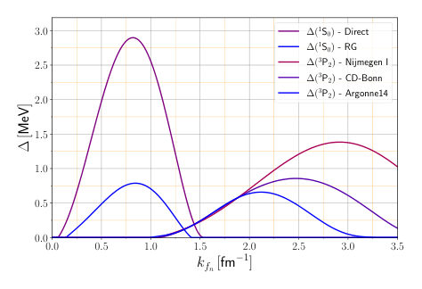
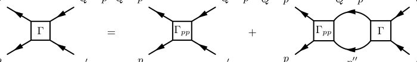
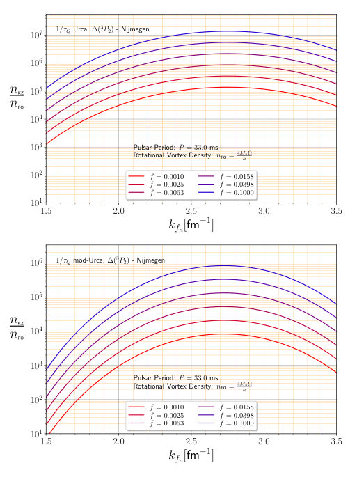
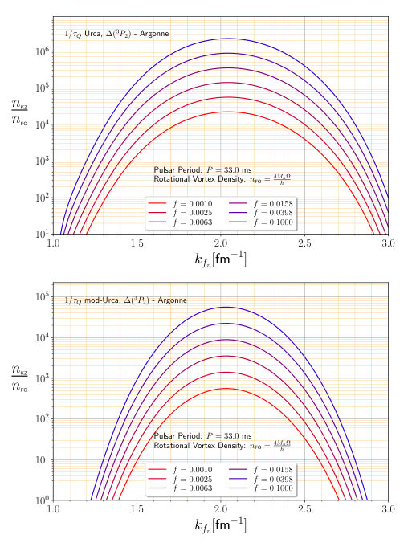
Summary. This paper demonstrates that the rapid neutrino cooling in young neutron stars acts as a thermal quench that triggers the Kibble-Zurek mechanism. This process generates a high density of quantized vortices, resulting in a state of quantum turbulence within the star's superfluid core. These findings have significant implications for understanding pulsar rotation and thermal evolution.
Why it may be interesting. The paper explores non-equilibrium phase transitions and the generation of topological defects via rapid quenches, which is highly relevant to the study of dynamics in many-body systems and the formation of defects in condensed matter.
Main problem. Investigating whether the rapid, non-equilibrium neutrino cooling in young neutron stars triggers the generation of quantum turbulence through the formation of topological defects.
Main result. The application of the Kibble-Zurek mechanism (KZM) predicts that rapid cooling leads to a very high density of quantized vortices and loops, creating a random network of quantum turbulence in the neutron star interior.
Method. The author uses the Kibble-Zurek mechanism (KZM) and scaling relations derived from the Cooper pair fluctuation propagator to calculate vortex densities based on Urca and modified Urca cooling rates.
Model / system. The system is the interior crust and liquid core of a young neutron star, modeled as a quantum liquid mixture of neutron and proton superfluids and a relativistic electron liquid undergoing a second-order phase transition.
Key observables. Areal density of phase vortices (nv), inter-vortex spacing (dv), and the quench rate (1/tau_Q).
Important parameters / regimes. Neutrino cooling timescales (tau_Q), transition temperatures (Tc), pairing gaps (Delta), and neutron density (kfn).
Assumptions / limitations. The cooling is modeled as a temperature quench; the fraction of phase windings (f) is non-universal; the system is treated within the weak-coupling limit for pairing.
Figures summary. Figure 1 shows neutron superfluid pairing calculations; Figure 2 shows a diagrammatic representation of the Cooper pair propagator; Figure 3 and 4 show the areal density of vortices as a function of neutron density for different cooling processes and nuclear potentials.
Paper structure. The paper introduces the neutron star interior system, applies the Kibble-Zurek mechanism to the non-equilibrium phase transition, derives scaling relations from the Cooper pair propagator, calculates vortex densities for specific cooling mechanisms (Urca/modified Urca), and compares results to standard pulsar rotation models.
The interior crust and much of the liquid core of neutron stars is believed to be a quantum liquid mixture of neutron and proton superfluids and a relativistic electron liquid. Quantized vortices in the neutron superfluid and quantized flux lines in the proton superconductor are topological defects of these hadronic condensates. I consider the formation of the superfluid state in young neutron stars under non-equilibrium conditions imposed by the neutrino cooling rate. The nonequilibrium phase transition implies that the onset of superfluidity is accompanied by the generation of quantized vortices based on the mechanism envisioned by Kibble in the context cosmic string formation in an evolutionary models of an expanding universe, and further developed by Zurek for nonequilibrium phase transitions in quantum liquids such as \Hefour. I discuss the Kibble-Zurek mechanism (KZM) and scaling relations for topological defect formation starting from the Cooper pair fluctuation propagator for temperatures approaching $T_c$. I then calculate the predicted vortex densities based on Urca and modified Urca cooling mechanisms in the cores of neutron stars for several models of the superfluid gap and transition temperature of the interior neutron superfluid. In all cases studied the KZM leads to a large density of topological defects in the condensate phase, which in 3D form a random network of vortex lines and loops, i.e. the generation of quantum turbulence.
Authors: Kevin Künstle, Matthias Wagner, Philipp Knaus, Yannik Kunz, Ephraim Spindler, Katharina Lasinger, Matthias R. Schweizer, Philipp Pirro, John F. Gregg, Mathias Weiler
Type: both · Category: other · PDF: https://arxiv.org/pdf/2605.22157v1
Analysis basis: full PDF text, analyzed in chunks
Topic relevance: spintronics-quantum-optics interface 3/5 · driven-dissipative phase transition 2/5 · non-equilibrium dynamics 2/5
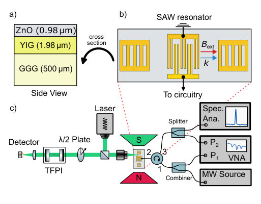
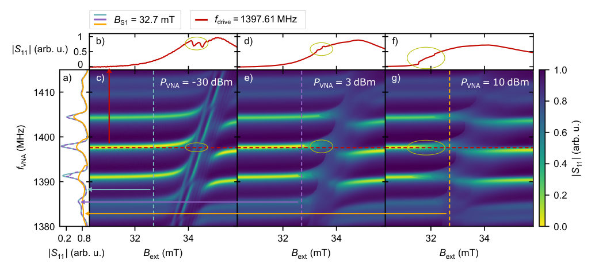
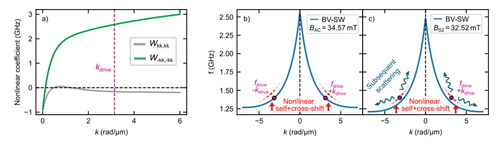
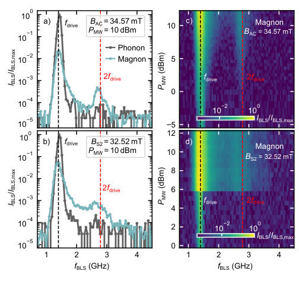
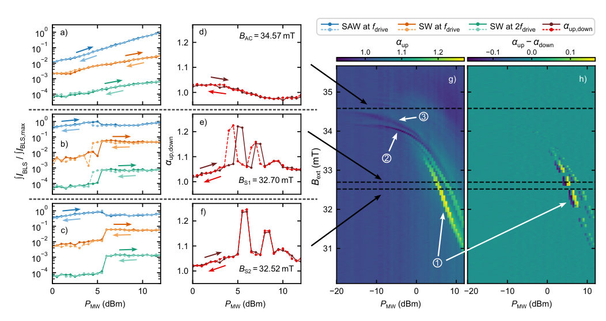
Summary. This paper demonstrates that in a SAW-driven resonator, the excitation of counterpropagating spin waves leads to a unique positive nonlinear frequency shift and bistable 'foldover' behavior. These findings provide a new mechanism for controlling magnon-phonon interactions and suggest potential for wave-based information processing and power-limiting devices.
Why it may be interesting. not directly relevant
Main problem. The study investigates the origin of nonlinear frequency shifts and the emergence of bistability in strongly coupled magnon-phonon hybrids (magnon-polarons).
Main result. The researchers discovered that the nonlinear frequency shift is positive and dominated by a cross-shift term arising from the simultaneous excitation of counterpropagating spin waves (+k and -k) by the SAW resonator.
Method. The study combines microwave reflection measurements (VNA) with polarization-resolved micro-focused Brillouin light scattering (uBLS) and utilizes a vector Hamiltonian formalism for theoretical modeling.
Model / system. A magnetoacoustic resonator consisting of a YIG/ZnO heterostructure in a backward-volume magnetic configuration, where surface acoustic waves (SAWs) are strongly coupled to finite-wave-vector spin waves (SWs).
Key observables. Electrical reflection (S11), frequency-resolved magnon and phonon spectra, and power-dependent redistribution of magnon populations.
Important parameters / regimes. Strong-coupling regime (g/2pi = 5.05 MHz), acoustic wavelength (2 um), and magnetic field detuning relative to the anticrossing point.
Assumptions / limitations. The nonlinear dynamics are modeled using the vector Hamiltonian formalism for nonlinear spin-wave dynamics.
Figures summary. Fig 1 shows the device geometry and measurement setup; Fig 2 details the linear coupling and experimental parameters; Fig 3 presents nonlinear coefficients and calculated dispersion relations; Fig 4 and 5 illustrate the power-dependent nonlinear shifts, hysteretic power sweeps, and the resulting bistability/foldover behavior.
Paper structure. The paper begins with the experimental setup and linear regime characterization, moves to the observation of power-dependent frequency shifts and nonlinear scattering, provides a theoretical explanation via the vector Hamiltonian formalism, and concludes with the demonstration of bistability and potential applications.
We investigate the nonlinear dynamics of strongly coupled surface acoustic waves (SAWs) and spin waves (SWs) in a magnetoacoustic resonator based on a YIG/ZnO heterostructure by combining microwave reflection measurements with microfocused Brillouin light scattering spectroscopy. In the linear regime, the electrical response reveals clear hybridization between standing SAW cavity modes and finite-wave-vector SWs, resulting in pronounced avoided crossings. At elevated drive powers, the hybrid system exhibits a strongly field-dependent nonlinear response characterized by a positive frequency shift of the driven SW mode. Using the vector Hamiltonian formalism for nonlinear spin-wave dynamics, we show that this shift is dominated by a cross-shift term. In our resonator geometry, this contribution becomes significant because the standing SAW cavity mode simultaneously excites counterpropagating SWs with wave vectors $+k$ and $-k$. For suitable field detuning, the nonlinear shift drives the SW mode into resonance with the SAW excitation, leading to a strong enhancement of the magnon population, broadband nonlinear scattering, and bistable foldover behavior. Beyond the foldover threshold, both the magnon and phonon responses stabilize. These results establish SAW-driven $k \neq 0$ magnon-phonon hybrids as a promising platform for nonlinear magnetoacoustics and wave-based information processing.
Authors: A. N. Osipov, V. N. Ivanova, V. M. Kovalev, I. G. Savenko
Type: theory · Category: strongly correlated electrons · PDF: https://arxiv.org/pdf/2605.21936v1
Analysis basis: full PDF text, analyzed in chunks
Topic relevance: Keldysh / 2PI / non-Gaussian methods 2/5 · non-equilibrium dynamics 2/5
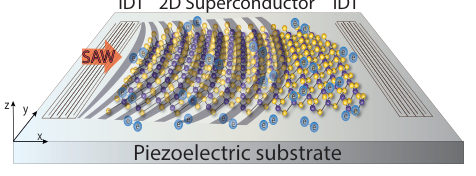
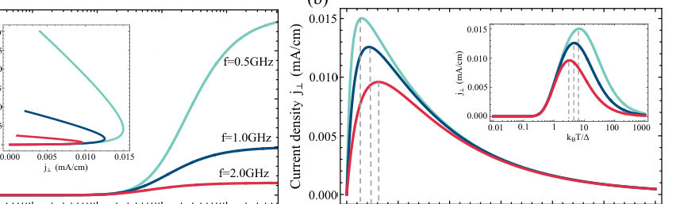
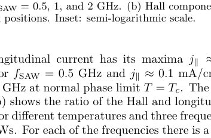
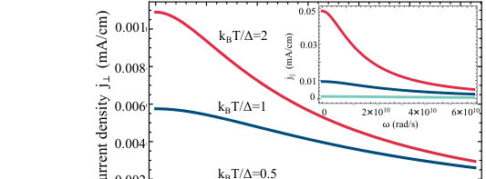
Summary. This paper proposes using Surface Acoustic Waves to detect chiral p-wave superconductivity in 2D materials. It demonstrates that the asymmetric scattering of quasiparticles generates a measurable transverse DC current. This provides a high-sensitivity electrical alternative to traditional optical methods for identifying unconventional pairing.
Why it may be interesting. not directly relevant
Main problem. The difficulty of identifying chiral p-wave pairing symmetry in 2D superconductors using traditional optical probes due to low signal-to-noise and substrate interference.
Main result. The authors propose that the anomalous acoustoelectric effect, specifically a transverse DC current caused by skew scattering, serves as a robust electrical signature of chiral order parameters.
Method. A kinetic equation approach using the Boltzmann equation and T-matrix approach to analyze subgap dynamics and asymmetric scattering probabilities.
Model / system. A 2D chiral p-wave superconductor (such as MoS2 or twisted bilayer graphene) placed on a piezoelectric substrate where Surface Acoustic Waves (SAWs) induce a dragging potential.
Key observables. Transverse (Hall) current density, longitudinal current density, and the induced superconducting condensate phase difference across sample boundaries.
Important parameters / regimes. Superconducting gap (Delta), transition temperature (Tc), SAW frequency (omega), momentum relaxation time (tau_p), and the diffusive limit (kl << 1).
Assumptions / limitations. The system is in the diffusive limit, the SAW frequency is much smaller than the superconducting gap, and the acoustic wave velocity is much less than the Fermi velocity.
Figures summary. Figure 1 shows an experimental setup of a 2D superconductor on a piezoelectric substrate with IDTs; Figure 2 shows the longitudinal and Hall current densities as functions of temperature and gap magnitude.
Paper structure. The paper introduces the problem of detecting chiral pairing, proposes the acoustoelectric effect, develops the kinetic theory framework including skew scattering, derives the current density components, and discusses the experimental observability of the results.
The identification of unconventional pairing in two-dimensional materials is a central challenge in modern condensed matter physics. While chiral p-wave superconductivity offers a promising platform for topological quantum computing, its detection remains elusive due to the inherent limitations of optical probes in the two-dimensional limit. We propose the anomalous acoustoelectric effect as a robust, alternative to optical signature of p-wave paring symmetry. We demonstrate that an acoustic wave induces a transverse dc current resulting in a measurable condensate phase difference on sample boundaries originating from the anisotropic scattering of quasiparticles in the absence of an external magnetic field. Crucially, the quasiparticle-mediated acoustoelectric response dominates near the critical temperature and, unlike the superconducting condensate, is not suppressed by electron-hole asymmetry factor. These results establish the anomalous acoustoelectric effect as a high-sensitivity electrical probe of the chiral order parameter, providing a tool for experimental detecting of unconventional pairing in superconductors.
Authors: Alfonso Maiellaro
Type: theory · Category: strongly correlated electrons · PDF: https://arxiv.org/pdf/2605.22460v1
Analysis basis: full PDF text, analyzed in chunks
Topic relevance: entanglement & information structure 2/5 · non-equilibrium dynamics 2/5
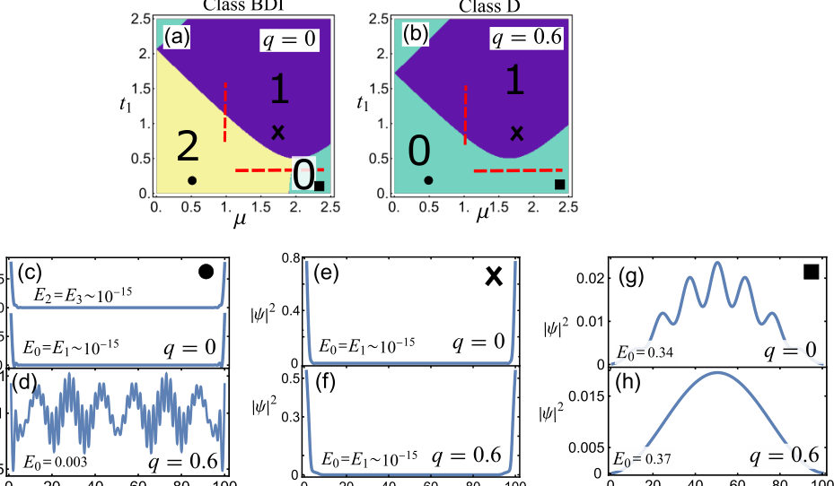
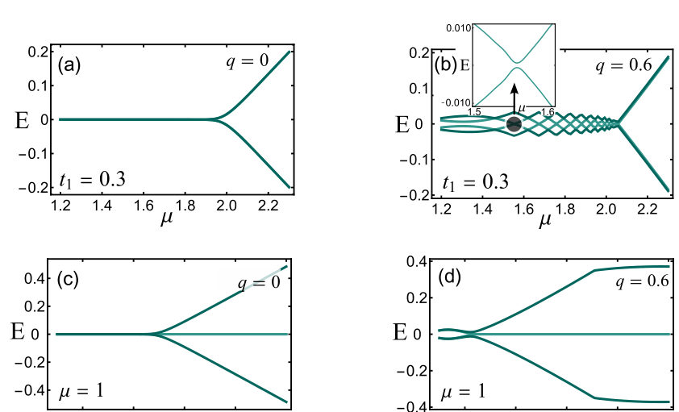
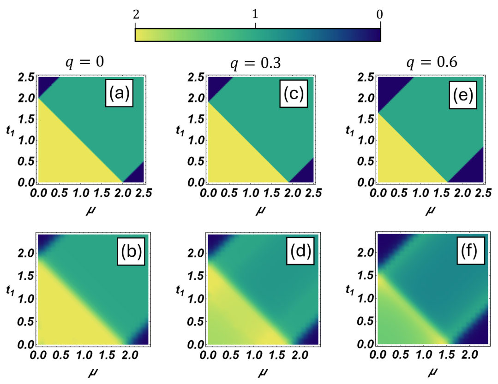
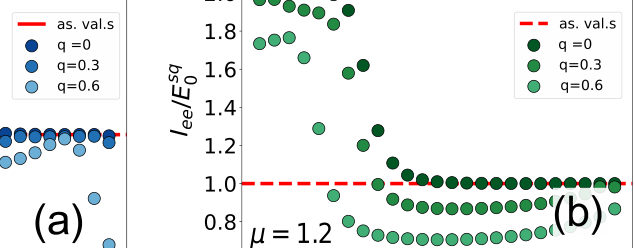
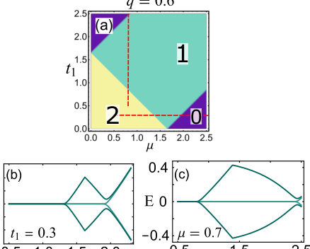
Summary. This paper demonstrates that injecting a charge current into a multichannel superconductor breaks time-reversal and chiral symmetries, which suppresses higher-order topological phases. It identifies that while the two-mode phase is fragile under current, it can be stabilized if the superconducting channels remain decoupled.
Why it may be interesting. not directly relevant
Main problem. Investigating how a finite charge current induces symmetry breaking that reduces the topological protection and suppresses higher-multiplicity Majorana modes in multichannel superconductors.
Main result. The study shows that a finite current drives the system from the BDI class to the D class, making the two-mode topological phase fragile, unless the channels are decoupled (interchain pairing is zero).
Method. The authors use a real-space Hamiltonian approach, combining bulk topological invariants (Pfaffian) with real-space entanglement diagnostics like edge-edge quantum conditional mutual information (Iee).
Model / system. A Kitaev ladder model consisting of two coupled spinless p-wave superconducting chains with longitudinal and interchain hopping and pairing.
Key observables. Topological invariants (Z and Z2), Bogoli-de Gennes (BdG) energy spectra, Majorana Bound State (MBS) probability densities, and edge-edge quantum conditional mutual information (Iee).
Important parameters / regimes. Chemical potential (mu), longitudinal hopping (t), interchain hopping (t1), longitudinal pairing (Delta), interchain pairing (Delta1), and current-induced momentum (q).
Assumptions / limitations. The current is modeled via an effective Hamiltonian using a Peierls-like substitution (q-dependent phase factor).
Figures summary. Figure 1 shows phase diagrams comparing equilibrium and current-carrying regimes; Figure 2 shows energy spectra and mode densities illustrating the lifting of the two-mode configuration; Figure 3 shows the persistence of the two-mode phase when interchain pairing is zero; Figure 4 shows energy spectra as a function of chemical potential and interchain hopping.
Paper structure. The paper introduces the problem of current-induced symmetry breaking, defines the Kitaev ladder model and current-carrying Hamiltonian, presents bulk and real-space topological analysis, discusses the transition from BDI to D class, and concludes with the implications for superconducting nanostructures.
We investigate the robustness of topological phases in a Kitaev ladder composed of two coupled superconducting chains under the perturbing influence of a finite charge current. By introducing an effective Hamiltonian depending on the quasiparticle momentum induced by the current, we show that the two-mode topological phase, present in the isolated ladder, is fragile against a finite current flux. To characterize this behavior, we combine bulk topological invariants with real-space diagnostics, including the edge-edge quantum conditional mutual information Iee, which provides an entanglement-based signature of topological order. Our results provide an effective framework to describe how current injection and measurement processes can affect topological protection in superconducting nanostructures.
Authors: M. Maneesh Kumar, Md Kaif Faiyaz, Sayan Sarkar, Amit Agarwal
Type: theory · Category: other · PDF: https://arxiv.org/pdf/2605.22227v1
Analysis basis: full PDF text, analyzed in chunks
Topic relevance: Keldysh / 2PI / non-Gaussian methods 2/5 · non-equilibrium dynamics 2/5
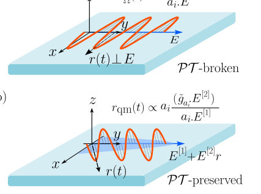
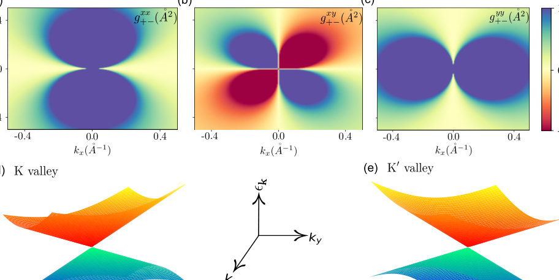
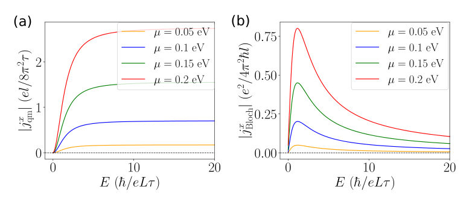
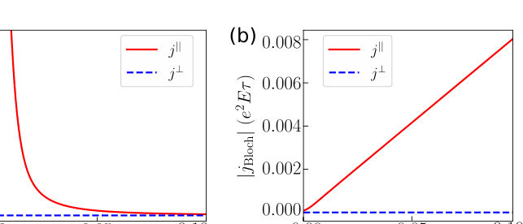
Summary. The paper demonstrates that an inhomogeneous electric field can drive Bloch-like oscillations through the quantum metric, even in the absence of Berry curvature. It shows that this quantum-metric-driven current behaves differently from conventional Bloch oscillations, specifically approaching a finite saturation in high fields. This provides a new mechanism for observing band-geometric effects in synthetic lattices.
Why it may be interesting. not directly relevant
Main problem. Investigating whether a band-geometric analog of Bloch oscillations can exist in systems where the Berry curvature vanishes by utilizing the quantum metric.
Main result. A weakly inhomogeneous electric field introduces a distinct quantum-metric term to semiclassical dynamics, generating oscillatory real-space motion even when Berry curvature is zero.
Method. Extended semiclassical equations of motion for wavepacket dynamics and the semiclassical Boltzmann equation using a relaxation-time approximation.
Model / system. A tilted Dirac model used as an illustrative system, considering electrons in a periodic potential subject to a weakly inhomogeneous electric field.
Key observables. Real-space position (drift and oscillatory components), quantum-metric-induced current (longitudinal and transverse), and differential conductance.
Important parameters / regimes. Berry curvature, quantum metric, electric field gradient, static electric field, and chemical potential.
Assumptions / limitations. The electric field varies slowly over the wavepacket size (weak-gradient approximation) and the semiclassical wavepacket approximation is valid.
Figures summary. Figure 1 shows schematics of Berry-curvature-driven vs. quantum-metric-induced Bloch oscillations; Figure 2 shows quantum-metric components in a tilted Dirac model; Figure 3 compares the scaling of quantum-metric current (saturation) vs. conventional Bloch current (negative differential conductance).
Paper structure. The paper identifies the problem of Berry-curvature-independent oscillations, derives modified semiclassical equations of motion including field gradients, applies these to a tilted Dirac model, calculates transport signatures (current and conductance), and discusses experimental platforms like moire superlattices.
Geometric analogs of Bloch oscillations studied so far have relied on Berry curvature. We show that a weakly inhomogeneous electric field adds a distinct quantum-metric term to semiclassical wavepacket dynamics, generating an oscillatory real-space contribution even when the Berry curvature vanishes. The associated transport response comprises an intrinsic and a scattering-time-dependent part. In the regime studied, the latter can dominate and approach finite saturation at high field when the relative field inhomogeneity is held fixed. A tilted Dirac model illustrates the mechanism. Realistic platforms will likely require synthetically engineered superlattices, with a finite quantum metric and an adequate band gap.
Authors: Fanuel I. Mendez, Luis Brey, H. A. Fertig
Type: theory · Category: strongly correlated electrons · PDF: https://arxiv.org/pdf/2605.22810v1
Analysis basis: full PDF text, analyzed in chunks
Topic relevance: Keldysh / 2PI / non-Gaussian methods 2/5 · non-equilibrium dynamics 2/5
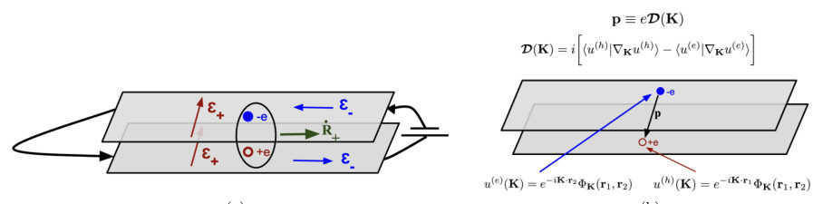
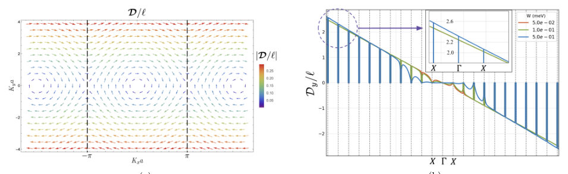
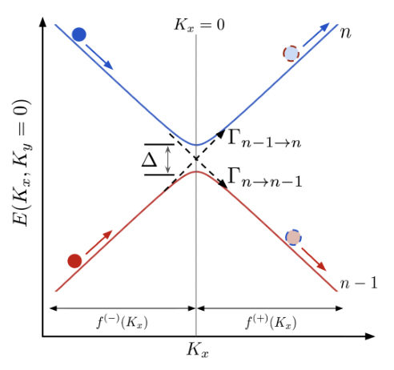
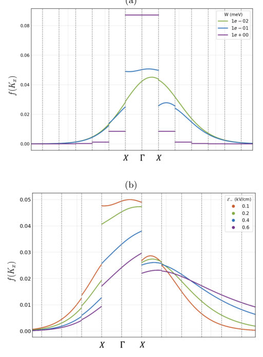
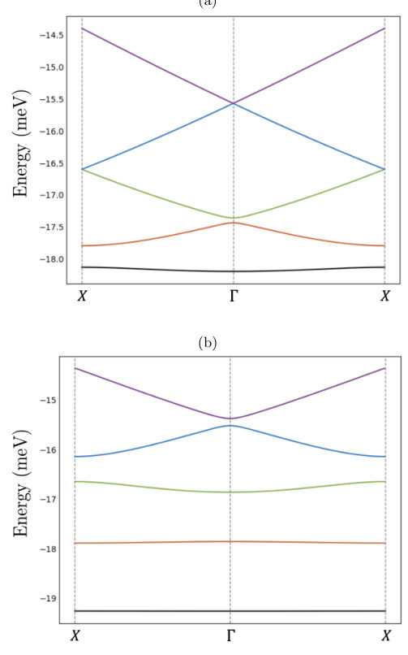
Summary. This paper demonstrates that the counterflow conductivity of interlayer excitons can serve as a tunable probe for their internal quantum geometric dipole. By manipulating periodic potentials and electric fields, one can observe how the quantum geometry of many-body excitations influences macroscopic transport.
Why it may be interesting. It provides a theoretical bridge between the abstract quantum geometry of many-body wavefunctions and measurable transport coefficients, which is highly relevant for understanding topological transport in correlated bilayer systems.
Main problem. The paper investigates how the internal quantum geometric dipole (QGD) of interlayer excitons manifests in transport properties, specifically looking for experimental signatures in counterflow conductivity.
Main result. The authors show that the off-diagonal counterflow conductivity $\sigma_{xy}^{(CF)}$ is proportional to the gradient of the QGD with respect to momentum, and that this conductivity can be tuned by varying the periodic potential strength and the layer-antisymmetric electric field.
Method. The study employs a semiclassical Boltzmann transport approach including inter-band Landau-Zener tunneling and numerical diagonalization of a tridiagonal Hamiltonian in an extended zone scheme.
Model / system. A 2D bilayer system (such as TMDs or graphene heterostructures) in a strong perpendicular magnetic field, subject to a unidirectional 1D periodic potential (superlattice).
Key observables. Counterflow conductivity tensor components ($\sigma_{xy}^{(CF)}$, $\sigma_{yx}^{(CF)}$, $\sigma_{xx}^{(CF)}$, $\sigma_{yy}^{(CF)}$) and the Quantum Geometric Dipole (QGD).
Important parameters / regimes. Periodic potential strength ($W$), layer-antisymmetric electric field ($E_-$), dielectric constant ($\kappa$), magnetic length ($\ell$), and layer separation ($d$).
Assumptions / limitations. Strong magnetic field limit (lowest Landau level), high-temperature/dilute limit (ignoring BEC and exciton-exciton interactions), and neglect of electron/hole recombination.
Figures summary. Figure 1 shows schematics of exciton counterflow and the QGD definition; Figure 2 illustrates the QGD vector structure and its dependence on potential strength; Figure 3 shows interband tunneling at avoided crossings; Figure 4 displays exciton band structures; Figure 6 shows conductivity dependence on $\kappa$ and $E_-$.
Paper structure. The paper begins by defining the QGD and its relation to exciton polarization, moves to the semiclassical equations of motion and the Boltzmann transport framework, analyzes the effects of periodic potentials and electric fields on conductivity, and concludes with an appendix deriving the explicit QGD-conductivity link.
Collective excitations of many-body electron systems can carry internal structure, supporting novel quantum geometric and topological properties. Among these are a quantum geometric dipole (QGD), which for excitons have direct significance as an internal polarization. For interlayer excitons of a bilayer system, this represents an in-plane dipole moment, which can be used to drive them with in-plane electric fields. In this work, we consider counterflow electric currents associated with driven excitons in such a bilayer system as a probe of their QGD structure. As a simple but non-trivial example, we analyze a structure with a one-dimensional periodic potential in a strong perpendicular magnetic field. The resulting magnetoexciton bands host QGD structure that distinguishes it from the exciton QGD of a uniform system. To model exciton transport we adopt a Boltzmann approach that includes inter-band tunneling, allowing us to consider non-equilibrium momentum distributions that result from strong layer-antisymmetric driving fields. We show how linear response to a layer-symmetric component of the driving fields provide information about the QGD, and that the broad QGD structure of the exciton bands can be probed by the varying the layer-antisymmetric field. Our results demonstrate that counterflow conductivity serves as a tunable probe of the internal quantum geometric structure carried by the interlayer excitons, connecting transport to the quantum geometry of many-body excitations.
Authors: Nikhil Kumar
Type: theory · Category: other · PDF: https://arxiv.org/pdf/2605.21888v1
Analysis basis: full PDF text, analyzed in chunks
Topic relevance: spintronics-quantum-optics interface 2/5 · non-equilibrium dynamics 1/5
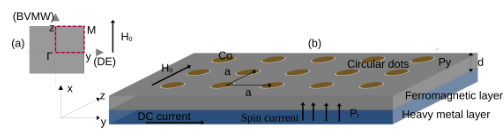
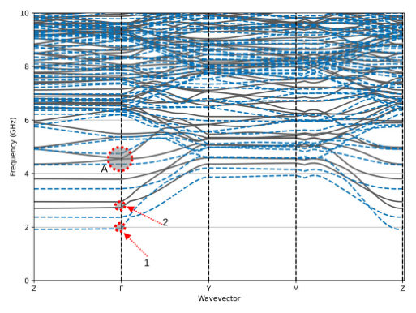
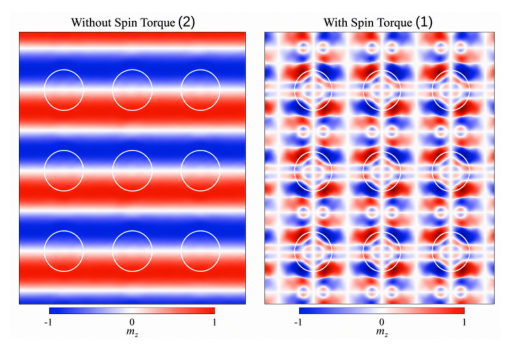
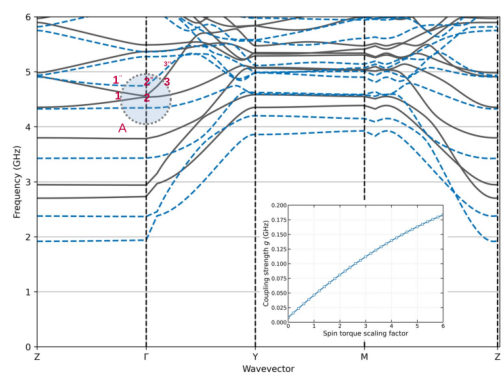
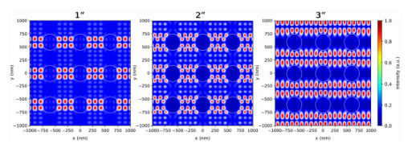
Summary. This paper demonstrates how electrical current can be used to actively engineer the band structure of a magnonic crystal. By applying inhomogeneous spin-orbit torque, the researchers show they can induce mode hybridization and create tunable band gaps. This provides a pathway for developing programmable, reconfigurable magnonic and spintronic devices.
Why it may be interesting. not directly relevant
Main problem. The study addresses the need for active, electrical control over spin-wave propagation and band structures in magnonic crystals, moving beyond passive systems.
Main result. The researchers demonstrate that inhomogeneous current-induced spin-orbit torque can induce band hybridization, create tunable hybridization gaps, and enable the reconfiguration of magnonic states through mode conversion.
Method. The study uses the Plane Wave Method (PWM) to solve the linearized Landau-Lifshitz-Gilbert (LLG) equation in the reciprocal lattice, applying perturbation theory to model the periodic spin-torque term.
Model / system. A 2D bicomponent magnonic crystal consisting of a Permalloy/heavy metal bilayer nanopatterned with a 2D array of Cobalt nanodots, modeled using the LLG equation with a field-like torque term.
Key observables. Spin-wave band structures, magnonic eigenmodes, hybridization gaps, avoided crossings (anticrossing), and mode profiles.
Important parameters / regimes. Current density (J), spin-torque scaling factor, saturation magnetization (Ms), lattice constant (a), and torque efficiencies (c_||, c_perp).
Assumptions / limitations. Neglected Gilbert damping and damping-like torque; assumed uniform static magnetization; used a linearized approximation for spin-wave dynamics; neglected magnetocrystalline anisotropy.
Figures summary. Fig 1 shows the crystal structure and Brillouin Zone; Fig 2 compares dispersion with and without spin torque; Fig 3 shows eigenmode profiles at the Gamma point; Fig 4 shows the evolution of the anticrossing gap; Fig 5 and 6 show the evolution of modes through hybridization.
Paper structure. The paper introduces the problem of active magnonic control, describes the bicomponent crystal system and the LLG-based mathematical model, presents numerical results using the Plane Wave Method regarding band engineering and mode hybridization, and concludes with implications for reconfigurable spintronic devices.
Spin wave propagation and dynamic control are essential for reconfigurable magnonic and spintronic devices. Here, tunable mode coupling and band hybridisation are demonstrated in a nanopatterned bicomponent magnonic crystal consisting of a Permalloy/heavy metal bilayer patterned with a two dimensional array of Co nanodots. Using the plane wave method and the linearised Landau Lifshitz equation with a field like torque term, we show that inhomogeneous current induced spin torque produces periodic modulation of the magnonic frequency, enabling dynamic control of spin-wave dispersion. A pronounced avoided crossing between localised and propagating Damon Eshbach modes is observed, leading to tunable hybridisation gaps, band deformation, and enhanced mode mixing. The spin torque induced modulation enables controlled mode conversion and reconfigurable hybrid magnonic states, demonstrating efficient electrical tuning of nanoscale spin-wave dynamics.
Authors: Collin R. Sanborn, Son T. Le, Thuc T. Mai, Maria F. Munoz, Riccardo Torsi, Angela R. Hight Walker, Curt A. Richter, Samuel W. LaGasse, Aubrey T. Hanbicki, Adam L. Friedman
Type: experiment · Category: strongly correlated electrons · PDF: https://arxiv.org/pdf/2605.22452v1
Analysis basis: full PDF text, analyzed in chunks
Topic relevance: non-equilibrium dynamics 2/5
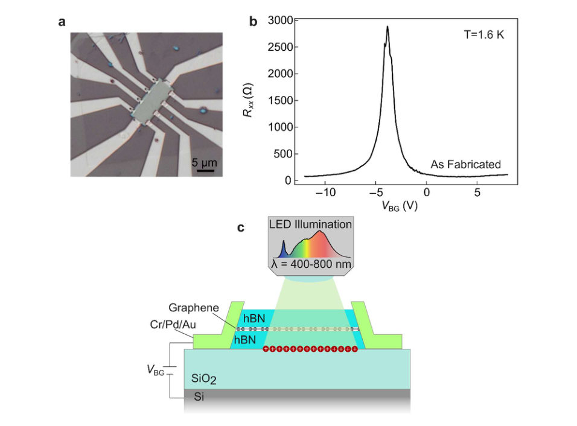
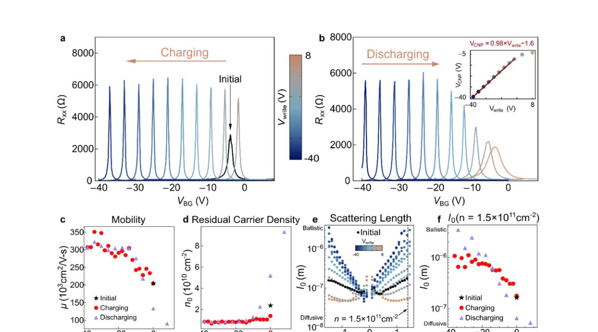
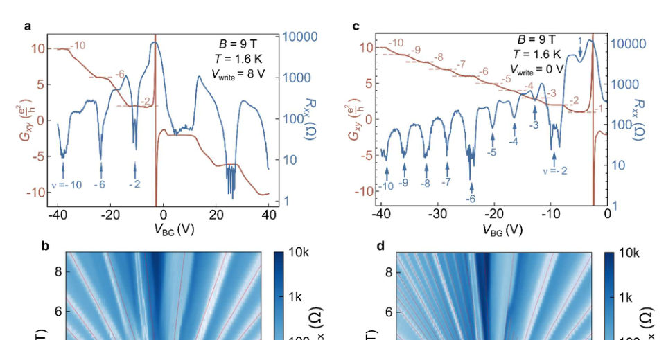
Summary. The researchers developed a way to use light to precisely control the number of electrons and the amount of disorder in graphene devices. This technique allows them to switch between different transport regimes and reveal complex quantum Hall states that were previously hidden by disorder. This provides a new, accessible tool for engineering high-quality 2D materials for studying correlated physics.
Why it may be interesting. The paper demonstrates a method to deterministically tune the strength of Coulomb interactions and disorder in a 2D system, which is highly relevant for studying many-body dynamics and the stability of correlated phases.
Main problem. The need for precise, non-destructive, and in situ control over carrier concentration and electronic disorder in 2D van der Waals heterostructures to study fragile correlated states.
Main result. Demonstrated that photoinduced modulation doping can reversibly tune carrier density and mobility, enabling the transition from diffusive to quasi-ballistic transport and the observation of quantum Hall isospin ferromagnetic states.
Method. Using standard white light sources to induce charge trapping at the hBN-SiO2 interface (photodoping) and prolonged illumination to reduce disorder (photoannealing).
Model / system. hBN-encapsulated graphene Hall bar heterostructures on a SiO2 backgate, analyzed using Drude and Landauer transport models.
Key observables. Carrier mobility, carrier density, residual carrier density, scattering length, and Landau level degeneracy lifting.
Important parameters / regimes. Transition between diffusive and quasi-ballistic transport regimes; tuning of mobility between 200,000 and 300,000 cm2/V-s; magnetic fields up to 9 T.
Assumptions / limitations. The scattering model assumes 2D Coulomb disorder located at a distance of more than a few nm from the graphene channel.
Figures summary. Fig 1: Schematic of the device and photodoping mechanism. Fig 2: Transfer curves showing CNP shifts, mobility extraction, and reversible tuning of transport regimes. Fig 3: Quantum Hall measurements showing the emergence of split plateaus (degeneracy lifting) after photoannealing.
Paper structure. The paper introduces the photodoping technique, demonstrates its ability to control carrier density and reduce disorder via photoannealing, quantifies the transport improvements using Drude and Landauer models, and concludes by showing the emergence of many-body correlated states in the high-quality regime.
Modulation doping, a well-established technique for traditional semiconductor heterostructures, is a promising approach for tailoring carrier concentration in 2D materials devices. In this letter we report on photoinduced modulation doping in hBN-graphene-hBN-SiO2 heterostructures utilizing standard white light sources and no additional fabrication complexity. We establish the use of this technique to both dope the channel material and to photoanneal devices, providing control over electronic doping and disorder in the graphene channel. We analyze the transport properties by employing Drude and Landauer transport models, highlighting the ability to reversibly tune the mobility and mean scattering length of the graphene with a high degree of accuracy. This tunability allows us to switch our device between the diffusive and quasi-ballistic transport regimes in situ. We utilize the exceptional control our technique provides over local disorder to realize quantum Hall isospin ferromagnetic states in a device whose initial quality would otherwise leave such states unobservable. These results demonstrate precise manipulation of carrier density and charge disorder in van der Waals heterostructures, providing a highly accessible approach to creating high-quality devices capable of realizing correlated electronic states.
Authors: Donghang Xie, Haozhe Wang, Zhe Zhang, Zishuang Li, Jiahua Lu, Ronghua Liu, Jun Du, Bo Liu, Yu Yan, Liang He, Jing Wu, Rong Zhang, Bo Liu, Tiejun Zhou, Yongbing Xu, Xuezhong Ruan
Type: experiment · Category: other · PDF: https://arxiv.org/pdf/2605.22382v1
Analysis basis: full PDF text, analyzed in chunks
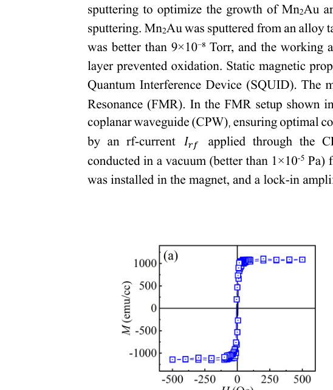
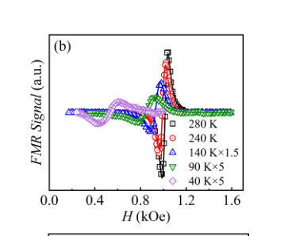
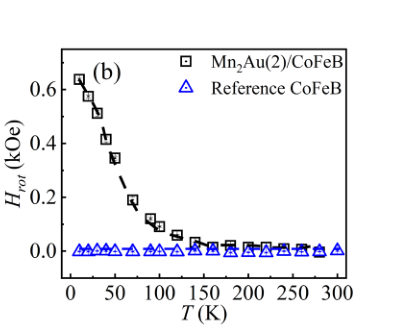
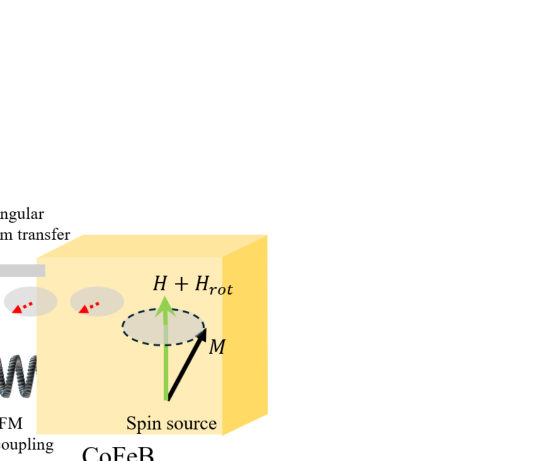
Summary. The study investigates how the onset of antiferromagnetic ordering in ultrathin Mn2Au layers enhances the magnetic damping of an adjacent CoFeB layer. By ruling out spin pumping and two-magnon scattering, the authors demonstrate that the effect is driven by exchange-mediated spin angular momentum transfer. This provides critical insights for developing next-generation antiferromagnetic spintronic devices.
Why it may be interesting. not directly relevant
Main problem. Understanding the mechanism behind the dramatic increase in magnetic damping and the emergence of rotatable anisotropy in Mn2Au/CoFeB bilayers as temperature decreases.
Main result. The increase in magnetic damping is attributed to enhanced spin angular momentum transfer from CoFeB to Mn2Au, mediated by AFM-FM exchange coupling that strengthens with the development of AFM ordering.
Method. Ferromagnetic Resonance (FMR) spectroscopy, SQUID magnetometry, and temperature-dependent analysis of magnetic properties.
Model / system. Mn2Au/CoFeB bilayers, specifically 2-nm and 4-nm thick Mn2Au layers on 4-nm CoFeB, studied across a temperature range from 10 K to 300 K.
Key observables. Magnetic damping (alpha), rotatable anisotropy field (Hrot), exchange bias field (Heb), Neel temperature (Tn), and saturation magnetization (Ms).
Important parameters / regimes. Temperature (10 K to 300 K), Mn2Au thickness (2 nm and 4 nm), and the critical temperature threshold (around 160 K for 2 nm films).
Figures summary. Fig 1 shows hysteresis loops and temperature dependence of exchange bias; Fig 2 presents the FMR setup and frequency-dependent resonance signals; Fig 4 provides a schematic of the spin angular momentum transfer mechanism.
Paper structure. The paper introduces the problem of AFM/FM dynamics, describes the experimental fabrication and characterization of Mn2Au/CoFeB, presents temperature-dependent FMR and SQUID results, rules out alternative mechanisms like spin pumping and two-magnon scattering, and concludes with a proposed physical mechanism for spin transfer.
Antiferromagnets (AFMs) hold significant potential for spintronic devices owing to their insensitivity to external magnetic fields and the absence of stray fields. Beyond these inherent advantages, an AFM can manipulate the magnetic dynamics of a ferromagnet (FM) layer in AFM/FM bilayers, whereas the mechanism of such manipulation remains controversial. Here, we investigate the magnetic dynamics of AFM/FM Mn2Au/CoFeB bilayers via Ferromagnetic Resonance (FMR). It is found that the Néel temperature of 2-nm-thick Mn2Au is as low as ~40 K, in sharp contrast to that of bulk Mn2Au, which exceeds 1000 K. In the Mn2Au(2 nm)/CoFeB(4 nm) bilayer, the magnetic damping $α$ of the CoFeB layer increases from 0.013 to 0.047 as temperature decreases from 160 K to 10 K, accompanied by a synchronous increase in the exchange coupling field H_rot. Such an increase in $α$ is attributed to the enhanced spin angular momentum transfer from CoFeB to Mn2Au, mediated through AFM-FM exchange coupling between Mn2Au and CoFeB, which is enhanced by the Mn2Au antiferromagnetic ordering as the temperature decreases. Our study provides deeper insights into AFM/FM dynamics and spintronic storage technology.
Authors: Nemanja Kaloper
Type: theory · Category: other · PDF: https://arxiv.org/pdf/2605.21577v1
Analysis basis: full PDF text, analyzed in chunks
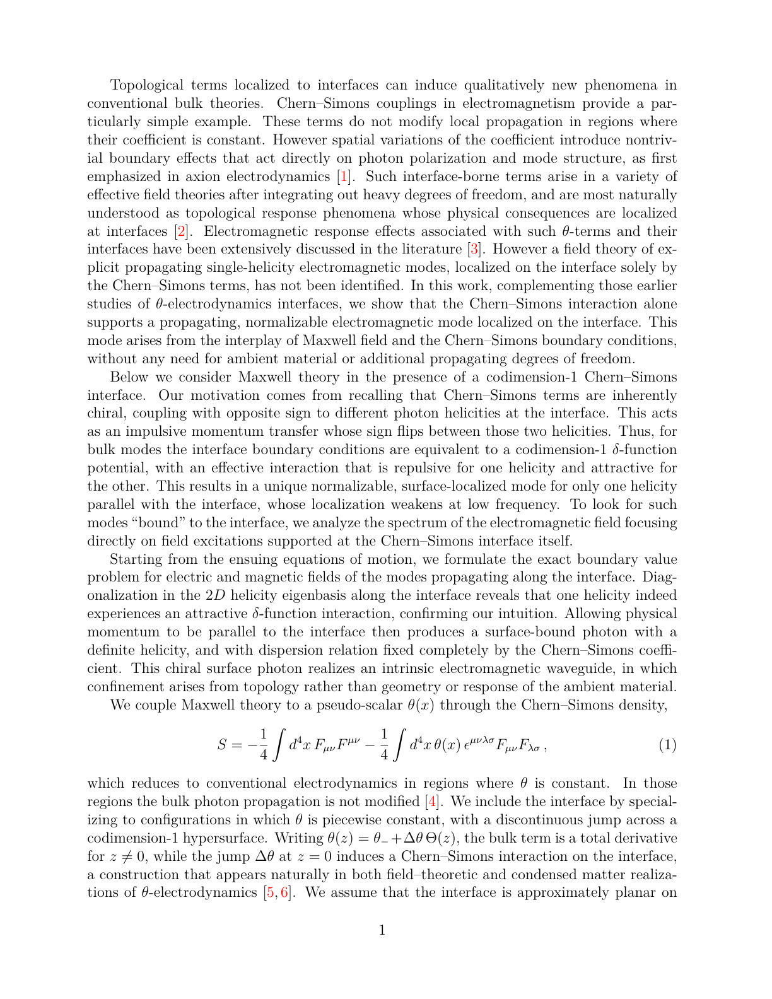
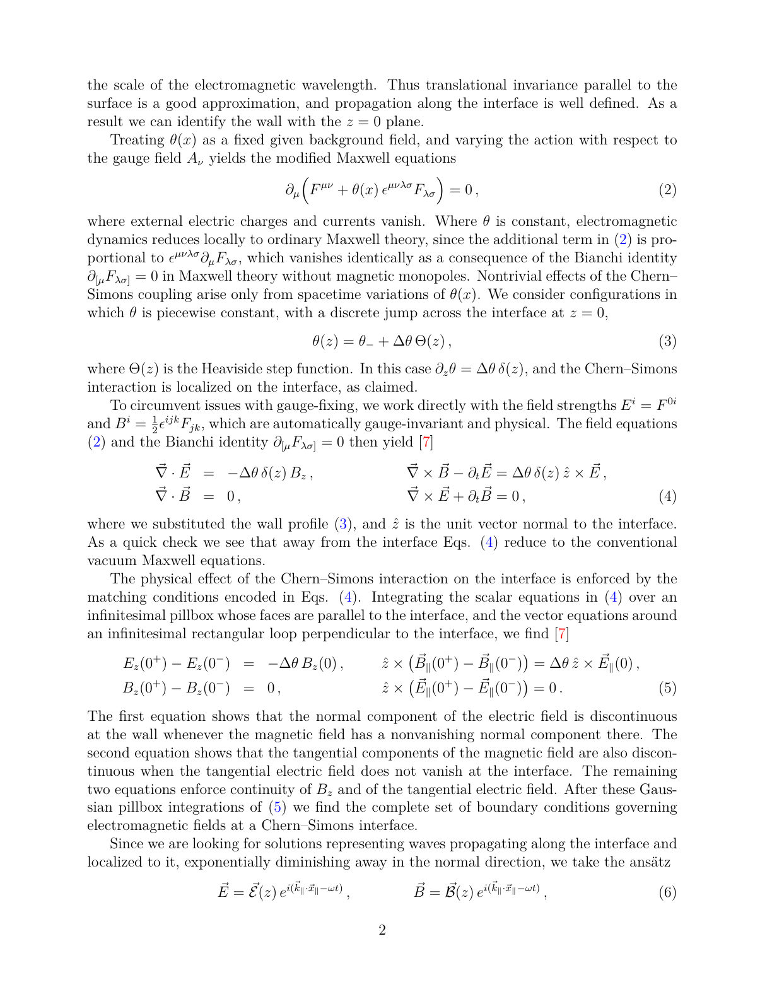
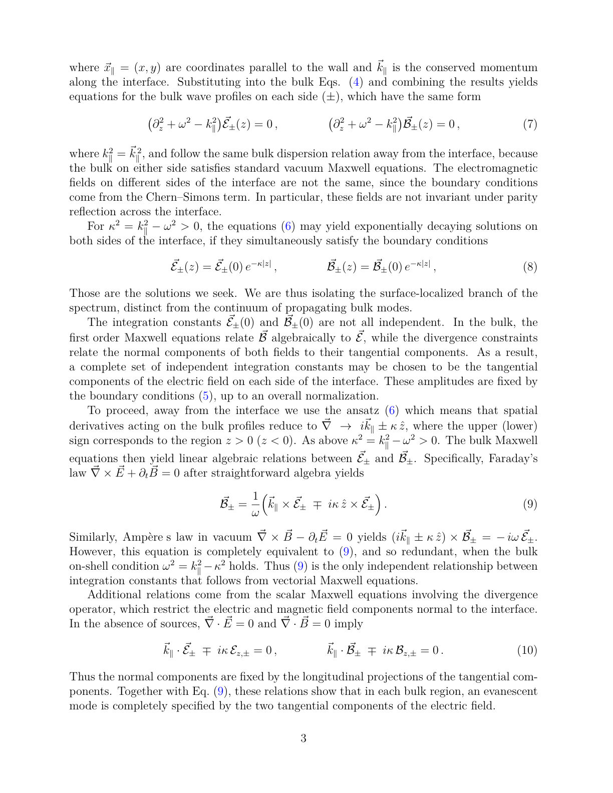
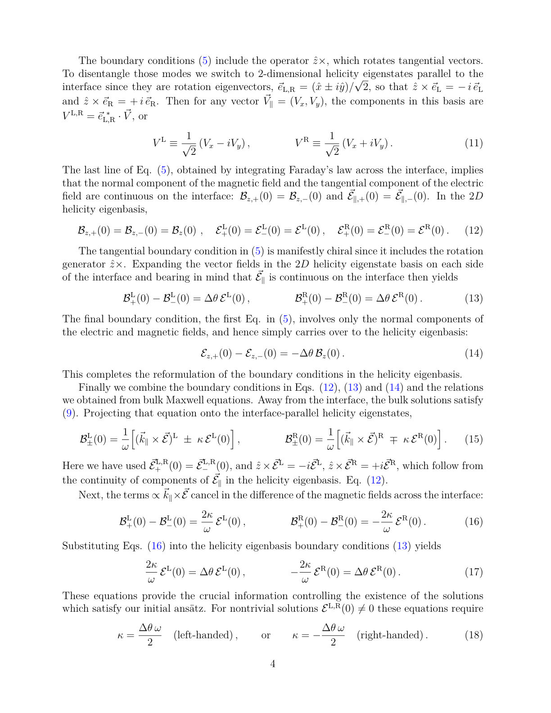
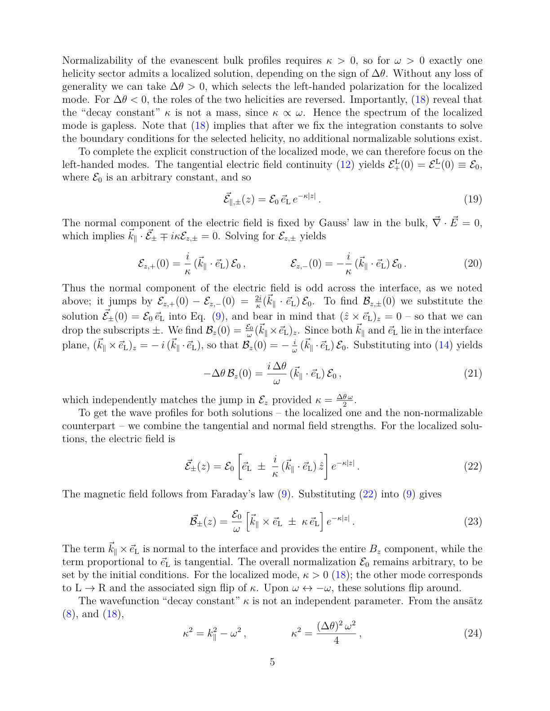
Summary. This paper demonstrates that a topological Chern-Simons interface can intrinsically support chiral electromagnetic surface waves even in a pure vacuum. It shows that the interface acts as a frequency-independent waveguide for a single helicity of light, driven by topology rather than material properties.
Why it may be interesting. not directly relevant
Main problem. The paper investigates whether a Chern-Simons interface between two regions of vacuum electrodynamics can support localized, chiral electromagnetic surface waves without the need for external material response or geometric confinement.
Main result. The study finds that the Chern-Simons interaction acts as an attractive delta-function potential for one photon helicity, creating a unique, gapless, and chiral surface photon with a frequency-independent index of refraction.
Method. The author solves the exact boundary value problem for Maxwell's equations by using a 2D helicity eigenbasis and applying Gaussian pillbox integration to derive matching conditions at the interface.
Model / system. The system is a 4D Maxwell theory featuring a codimension-1 (planar) interface where a pseudo-scalar theta field undergoes a discrete jump (delta-function potential).
Key observables. Photon helicity, dispersion relation, effective refractive index, and the time-averaged Poynting vector.
Important parameters / regimes. The Chern-Simons jump (delta-theta), frequency (omega), momentum parallel to the interface (k_parallel), and the UV cutoff scale.
Assumptions / limitations. The background theta field is treated as a fixed, non-dynamical background, the interface is assumed to be planar, and no external charges or currents are present.
Paper structure. The paper begins by defining the Chern-Simons interface model, proceeds to derive the modified Maxwell boundary conditions, solves the boundary value problem to identify the localized mode, analyzes the dispersion relation and energy transport, and concludes with a discussion on the UV limits of the theory.
We show that Maxwell theory with a codimension-$1$ Chern-Simons interface supports chiral electromagnetic surface waves on the interface, even when the bulk theory on both sides is conventional vacuum electrodynamics in infinite space. Solving the exact boundary value problem we find that the Chern-Simons interaction acts with opposite sign on the two helicities oriented along the interface, giving rise to one normalizable mode localized on the interface. This mode is a gapless chiral surface photon with linear dispersion and a frequency-independent index of refraction set by the Chern-Simons coefficient. This mode exists despite the absence of ambient material response or geometric confinement.
Authors: Yunhyeon Jeong, Akinori Kamiyama, John N. Moore, Takaaki Mano, Ken-ichi Sasaki, Yuuki Sugiyama, Tokiro Numasawa, Masahiro Hotta, Go Yusa
Type: experiment · Category: strongly correlated electrons · PDF: https://arxiv.org/pdf/2605.21989v1
Analysis basis: full PDF text, analyzed in chunks
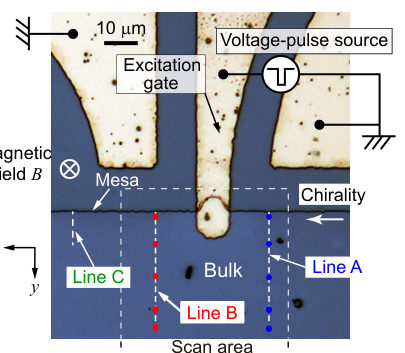
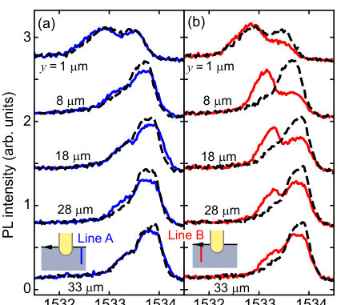
Summary. This paper uses time-resolved microscopy to observe the electromagnetic field of an edge excitation in a fractional quantum Hall state. It demonstrates that these excitations are not purely 1D but include a spatially extended, quasi-electrostatic near-field that reaches deep into the bulk. This reveals that edge-driven dynamics can trigger complex, multi-scale responses in the adjacent electronic fluid.
Why it may be interesting. not directly relevant
Main problem. To determine the spatial and dynamical structure of edge excitations in fractional quantum Hall states, specifically whether edge magnetoplasmons are strictly 1D charge-density oscillations or involve spatially extended electromagnetic fields.
Main result. The study reveals that edge magnetoplasmons possess a long-range, nearly instantaneous transverse near-field extending over 30 micrometers into the bulk, alongside slower secondary bulk-side dynamics.
Method. Stroboscopic time-resolved photoluminescence (PL) microscopy and spectroscopy using a Ti:sapphire laser synchronized with electrically launched voltage pulses.
Model / system. A nu=1/3 fractional quantum Hall state in a 15-nm GaAs/AlGaAs quantum well at high magnetic field (14 T) and ultra-low temperatures (40-50 mK).
Key observables. Trion photoluminescence spectra (singlet and triplet peaks), triplet PL intensity maps, peak energy shifts, and amplitude ratios.
Important parameters / regimes. Filling factor nu=1/3, magnetic field 14 T, temperature 40-50 mK, voltage pulse amplitude +/- 50 to 100 mV, and repetition periods of 13 ns and 52 ns.
Assumptions / limitations. The linewidth parameter is assumed to be common to both singlet and triplet trion components to stabilize the spectral fitting.
Figures summary. Fig 1 shows the experimental schematic; Fig 2 displays PL spectra snapshots showing downstream spectral changes; Fig 3 shows spatial maps of PL intensity and reflectance; Fig 4 presents color maps of triplet peak energy shifts and amplitude ratios as functions of position and time.
Paper structure. The paper introduces the experimental setup and device geometry, presents the time-resolved spectroscopic results showing the transverse near-field, analyzes the temporal evolution and secondary dynamics, and concludes by discussing the implications for the nature of edge excitations.
We report stroboscopic time-resolved photoluminescence (PL) microscopy and spectroscopy revealing the transverse near field of an edge excitation in a $ν=1/3$ fractional quantum Hall (FQH) state. Time-resolved $y$-$t$ maps reveal an immediate PL response extending more than $30~μ\mathrm{m}$ into the bulk transverse to the edge when the edge magnetoplasmon (EMP) passes the mesa boundary. The nearly instantaneous nature of this long-range response identifies it as the non-radiative, quasi-electrostatic near field, revealing the EMP as a spatially extended collective excitation rather than a strictly one-dimensional charge-density oscillation. We also observe secondary bulk-side responses distinct from the immediate transverse near-field response. The coexistence of these immediate and secondary responses shows that electrically launched edge excitations produce bulk-side dynamics on widely separated time scales.
Authors: Krisztián Márity, Konrád Kandrai, Gergely Dobrik, Zsolt E. Horváth, Kristóf Németh Dániel, György Kálvin, Levente Tapasztó, Péter Nemes-Incze
Type: experiment · Category: strongly correlated electrons · PDF: https://arxiv.org/pdf/2605.22282v1
Analysis basis: full PDF text, analyzed in chunks
Summary. This paper demonstrates that a simple blade-assisted exfoliation technique can significantly increase the amount of rhombohedral (ABC) stacking in graphite. By using mechanical shear and bending, the researchers can create samples with much higher ABC content, providing a new way to study the correlated and topological phases associated with ABC-stacked flat bands.
Why it may be interesting. not directly relevant
Main problem. The scarcity of rhombohedral (ABC) stacking in natural graphite limits the experimental study of its surface-localized flat bands and associated correlated and topological electronic phases.
Main result. Mechanical exfoliation and a novel blade-assisted exfoliation step significantly enrich the ABC stacking content in graphite, with thin flakes reaching up to 75% ABC area fraction.
Method. The study uses conventional and blade-assisted mechanical exfoliation (a tape-graphite-tape sandwich passed over a blade) combined with large-area Raman 2D-band skewness mapping and uniaxial strain application.
Model / system. The physical system is graphite, specifically focusing on the transition between Bernal (AB) and rhombohedral (ABC) stacking phases in thick flakes and few-layer graphene (FLG).
Key observables. 2D-band Raman skewness (gamma), ABC area fraction, Raman intensity, and wrinkle angles.
Important parameters / regimes. Layer number (3 to 22 layers), ABC area fraction, and applied uniaxial strain.
Assumptions / limitations. The study assumes that 2D-band skewness is a robust descriptor for stacking types that is resistant to strain-induced peak shifts.
Figures summary. Fig 1 shows schematics of AB/ABC stacking and the blade-assisted method; Fig 2 shows Raman 2D-band skewness as a function of layer number; Fig 3 compares Raman maps and skewness distributions across different preparation methods; Fig 4 shows optical and Raman maps of wrinkles; Fig 5 shows Raman maps of a 14-layer flake under varying strain.
Paper structure. The paper introduces the problem of ABC scarcity, describes the new blade-assisted exfoliation method, presents Raman-based quantification of stacking enrichment, details the mechanism of domain wall formation via wrinkles and shear, and demonstrates domain dynamics under strain.
Rhombohedral (ABC) graphite hosts a surface-localized flat band that supports correlated and topological electronic phases, but its experimental study is limited by the scarcity of ABC stacking in natural graphite, which is dominated by Bernal (AB) stacking. Here we show that the routine mechanical exfoliation step itself enriches the rhombohedral content of graphite flakes, and that a simple blade-assisted exfoliation step, which introduces additional shear, amplifies the effect further. Using large-area Raman 2D-band skewness mapping we measure ABC content at area fractions of 3\% in the pristine source crystal, 16\% after conventional exfoliation, and 26\% after blade-assisted exfoliation for thick flakes. In thin flakes ($<20$ layers) the per-flake area fraction reaches 75\% in the upper tail of the distribution. Tracking individual flakes before and after blade-assisted exfoliation shows that wrinkles seed AB-ABC domain walls, and uniaxial strain can move these walls. Blade-assisted mechanical exfoliation therefore removes one of the bottlenecks to the preparation of ABC-rich graphite samples for studies of correlated and topological phases in rhombohedral graphite.
Authors: J. S. Madhira, G. Potemkin, D. Grützmacher, T. Schäpers, M. Lyatti
Type: experiment · Category: strongly correlated electrons · PDF: https://arxiv.org/pdf/2605.22303v1
Analysis basis: full PDF text, analyzed in chunks
Summary. The researchers developed a way to transfer ultra-thin high-temperature superconducting YBCO films onto silicon substrates using a nanomembrane technique. This process preserves the material's high-quality superconductivity and creates a thermal barrier that could improve the performance of single-photon detectors.
Why it may be interesting. not directly relevant
Main problem. The need for a scalable fabrication method to integrate high-Tc superconductors like YBCO with standard silicon-based photonic architectures for applications like superconducting nanowire single-photon detectors.
Main result. Successful fabrication and transfer of ultra-thin YBCO films on STO nanomembranes to SiO2/Si substrates, maintaining high crystallinity and robust superconducting properties (Tc = 88.8 K) while significantly reducing thermal boundary conductance.
Method. High-pressure sputtering of YBCO/Au on an STO/SCAO bilayer, followed by the dissolution of the water-soluble SCAO sacrificial layer and a controlled transfer process using a pre-conditioned DGL polymer film.
Model / system. An ultra-thin (20 nm) YBa2Cu3O7-x (YBCO) film on a SrTiO3 (STO) nanomembrane, transferred onto a SiO2/Si substrate, forming a van der Waals interface.
Key observables. Critical temperature (Tc), critical current density (Jc), thermal boundary conductance (TBC), and X-ray diffraction (XRD) lattice constants.
Important parameters / regimes. YBCO thickness ~20 nm, Tc = 88.8 K, Jc = 6.8 MA/cm2 at 77 K, and TBC reduction of nearly two orders of magnitude.
Assumptions / limitations. The reduction in thermal boundary conductance is assumed to be the primary driver for enhanced stability of transient resistive states in the nanowires.
Figures summary. XRD scans of STO and the full YBCO/STO stack, AFM images of the surface, and the experimental procedure for the DGL-mediated transfer process.
Paper structure. The paper introduces the motivation for high-Tc SNSPDs, describes the fabrication and transfer protocol, presents structural and electrical characterization of the transferred films, analyzes the thermal boundary conductance, and concludes with the implications for photonic integration.
The fabrication of free-standing ultra-thin films from high-temperature (high-Tc) superconductors is of great interest for the development of superconducting nanowire single-photon detectors with high operating temperatures. We successfully fabricate a millimeter-sized, high-quality, ultra-thin YBa$2$Cu$3$O$_{7-x}$ (YBCO) film on an SrTiO$_3$/Sr$_{1.5}$Ca$_{1.5}$Al$_2$O$_6$ (STO/SCAO) bilayer using high-pressure sputtering. The STO nanomembranes with the YBCO films are released by dissolving the water-soluble SCAO sacrificial layer and transferred onto the SiO2/Si substrate. X-ray diffraction confirms that STO and YBCO crystallinity is preserved following transfer onto SiO2/Si substrates. Microbridges patterned from the transferred YBCO films exhibit a critical temperature of 88.8 K and a critical current density of 6.8 MA/cm2 at 77 K, demonstrating robust superconducting transport after transfer. The thermal boundary conductance across the van der Waals interface between the STO nanomembrane with YBCO film and the SiO2/Si substrate, measured over 15-75 K, is significantly reduced compared to that of epitaxial YBCO film on bulk STO leading to modified energy relaxation and enhanced stability of transient resistive states. These results establish ultra-thin YBCO films on optically transparent STO nanomembranes as a platform for integrating high-Tc superconducting devices with SiO2/Si-based photonic structures.
Authors: Matthias Kronseder, Thomas Mayer, Jan Minár, Magdalena Marganska, Hedwig Werner, Florian Schmid, Rebeca Diaz-Pardo, Ivana Vobornik, Jun Fuji, Cornelia Streeck, Alexander Gottwald, Hendrik Kaser, Bernd Kästner, Christian H. Back
Type: experiment · Category: other · PDF: https://arxiv.org/pdf/2605.22370v1
Analysis basis: full PDF text, analyzed in chunks
Summary. This paper reports the experimental generation of a new, highly energetic, and spin-polarized electronic band in Bi-based topological insulators using ion bombardment and annealing. This 'anomalous' state is unique because it possesses a spin helicity opposite to the standard topological surface state and spans an unusually large energy range. The study provides a detailed investigation into the possible physical origins of this state, such as surface reconstruction or chemical changes.
Why it may be interesting. not directly relevant
Main problem. The emergence of an unexpected, highly energetic, and spin-polarized electronic band (the ALS) in Bi-based topological insulators following surface treatment via ion bombardment and annealing.
Main result. The discovery of an 'anomaline linearly dispersing state' (ALS) that coexists with the regular topological surface state, possesses an opposite spin helicity, and spans a large energy range of ~650 meV with a Fermi velocity nearly identical to the regular TSS.
Method. The researchers used a 'sputter-heating cycle' (Ar-ion bombardment followed by annealing) on BSTS/Bi2Se3 heterostructures and characterized the electronic and structural changes using Spin-resolved ARPES, XPS, and AFM.
Model / system. The physical system consists of (Bi1-xSbx)2(Te1-ySey)3 (BSTS) / Bi2Se3 heterostructures grown on SrTiO3(111) substrates, subjected to surface modification via soft Ar-ion sputtering and annealing.
Key observables. Electronic band dispersion, spin-momentum locking (helicity), Fermi velocity (vF), energy range of the ALS, surface roughness, and chemical stoichiometry.
Important parameters / regimes. ALS energy range (~650 meV), Fermi velocity (approx. 5.1-5.3 x 10^5 m/s), and sputtering voltage (250-500 V).
Assumptions / limitations. The authors evaluate several models (Rashba 2DEG, TSS relocation, Bi-bilayer formation, etc.) but note that no single current model fully accounts for all observed properties.
Figures summary. Figure S1 shows the evolution of ARPES scans through different treatment stages: thermal decapping, sputtering (blurred scans), and annealing (improved contrast with the emergence of the ALS feature).
Paper structure. The paper introduces the problem of defect-induced states in TIs, describes the experimental generation of the ALS via surface treatment, presents the characterization of the new band's dispersion and spin properties, discusses the surface morphology changes, and evaluates various physical mechanisms for the origin of the ALS.
We report the generation of an anomalous linearly dispersing, spin-polarized band in Bi-based topological insulator (TI) thin films, induced by soft Ar-ion bombardment followed by annealing. This extra band -- which we call the anomalous linearly dispersing state (ALS) -- is superimposed on the regular band structure including the topological surface state (TSS), spans an unusually large energetic range of up to ${\sim}\,\SI{650}{\milli\electronvolt}$ at the $Γ$-point, and appears near the Fermi energy. Spin-resolved measurements indicate spin-momentum locking with a helicity \emph{opposite} to that of the regular TSS. The Fermi velocity of the ALS, $v_\mathrm{F} = (5.1\pm 0.4)\times 10^{5}\,\frac m s$, is indistinguishable from that of the regular TSS, $(5.3\pm 0.5)\times 10^{5}\,\frac m s$. The observation is reproducible across samples of varying thickness and was confirmed at two independent synchrotron radiation facilities. We discuss different mechanisms for the physical origin of the observed ALS including sputtering-induced TSS relocation, bi-layer formation by,e.g., chalcogen removal, and high-index surface relocation.
Authors: Thalis H. B. da Silva, Hai-Chen Wang, Tiago F. T. Cerqueira, Simone Di Cataldo, Silvana Botti
Type: theory · Category: disordered systems and neural networks · PDF: https://arxiv.org/pdf/2605.22167v1
Analysis basis: full PDF text, analyzed in chunks
Summary. Researchers developed a high-throughput framework combining machine learning with first-principles calculations to screen 2.8 million metallic compounds for high electrical conductivity. They identified new intermetallic candidates that could rival aluminum's conductivity by using light elements to reduce electron-phonon scattering. The study demonstrates that ML can effectively bridge the gap between massive chemical searches and expensive, high-accuracy quantum mechanical simulations.
Why it may be interesting. not directly relevant
Main problem. The challenge of efficiently predicting and optimizing electrical conductivity in metals across a massive chemical space of millions of compounds.
Main result. The study identifies several intermetallic candidates, such as LiBePt2, with predicted conductivities comparable to aluminum, and demonstrates that machine learning can accurately screen 2.8 million compounds.
Method. A multi-stage high-throughput workflow integrating machine learning surrogate models (ALIGNN) with ab initio calculations (DFT, BoltzTraP2, and EPW) to predict conductivity and electron-phonon coupling.
Model / system. The study screens approximately 2.8 million ordered inorganic metallic compounds from the Alexandria database, focusing on the interplay between electronic structure and electron-phonon scattering.
Key observables. Electrical conductivity (sigma), electron-phonon coupling constant (lambda), Fermi velocity (vF), and carrier density.
Important parameters / regimes. Distance to the convex hull (E_hull) <= 25 meV/atom for stability; conductivity threshold > 15 x 10^6 S/m.
Assumptions / limitations. The initial large-scale screening uses the constant relaxation-time approximation, which neglects material-specific scattering variations.
Figures summary. Figure 1 shows the computational workflow; Figure 2 illustrates the distribution of predicted conductivity vs. electron-phonon coupling; Figure 3 validates ML predictions against DFT; Figure 4 shows the fit of a derived empirical formula to experimental data.
Paper structure. The paper introduces the computational challenge, describes the multi-stage ML and ab initio workflow, presents the screening results and physical insights into high-conductivity mechanisms, and validates the models against experimental benchmarks.
We present a computational framework that integrates machine learning with high-throughput \textit{ab initio} calculations to screen over 2.8 million compounds for metallic transport. We identify several intermetallic candidates with predicted high conductivities comparable to that of aluminum ($36.59 \times 10^6$~S/m). We perform full electron--phonon coupling calculations for the top-performing materials, yielding results in excellent agreement with available experimental data. Our analysis reveals that while the noble metals (Ag, Au, Cu) define the practical ceiling for conductivity due to their unique electronic structure and low scattering, compounds like $\text{LiBePt}_2$ can achieve comparable performance by utilizing valence electrons from light elements to shift high-scattering $d$-states beneath the Fermi level. This study not only identifies novel high-performance conductors but also demonstrates the predictive power of combining statistical learning with detailed ab initio calculations.
Authors: Su Yang, Marco Calabrese, Vassilis Koukouloyannis, Panayotis G. Kevrekidis
Type: theory · Category: other · PDF: https://arxiv.org/pdf/2605.22610v1
Analysis basis: full PDF text, analyzed in chunks
Summary. This paper provides a systematic toolkit for analyzing shock wave dynamics in the Adlam-Allen model, a fundamental model for plasma physics. By using Whitham modulation theory and KdV reduction, the authors successfully predict the complex structures of dispersive shock waves and rarefaction waves. The results show that even simple asymptotic reductions can accurately capture the behavior of more complex nonlinear plasma waves.
Why it may be interesting. not directly relevant
Main problem. The study investigates the formation and structure of rarefaction and dispersive shock waves (DSWs) in the Adlam-Allen model, specifically addressing the Riemann problem with jump initial data.
Main result. The authors demonstrate that the DSW-fitting method and the KdV reduction provide highly accurate theoretical predictions for the edge features and amplitudes of shock waves in the Adlam-Allen model.
Method. The research employs Whitham modulation theory, the DSW-fitting method, and a KdV asymptotic reduction, validated against numerical simulations using RK4 and pseudospectral methods.
Model / system. The Adlam-Allen model is a system of nonlinear partial differential equations describing hydromagnetic waves in cold, collisionless, magnetospheric plasmas.
Key observables. Dispersive shock wave (DSW) amplitudes, edge speeds (solitonic and linear), wavenumber, and rarefaction wave profiles.
Important parameters / regimes. The non-dissipative regime, the dispersionless limit, the small-amplitude/long-wavelength (KdV) limit, and the carrier density/magnetic field constants (R0, B0).
Assumptions / limitations. The KdV reduction is an approximation valid primarily for small-amplitude jumps, and the analysis focuses on the non-dissipative, one-dimensional case.
Figures summary. Figure 1 shows permitted parameter regions for traveling waves; Figure 2 shows space-time evolution of a DSW; Figure 3 shows rarefaction wave profiles; Figure 4 and 5 compare theoretical predictions for DSW edges against numerical data; Figure 6 compares the AA model directly to the KdV reduction.
Paper structure. The paper begins with the definition of the Adlam-Allen model and its physical context, followed by the derivation of traveling wave solutions and modulation equations, then moves to the analysis of the dispersionless limit and the DSW-fitting method, and concludes with a comparison between the full model and its KdV reduction via numerical validation.
In the present work, we revisit the Adlam-Allen (AA) model in order to investigate its numerically observed rarefaction and dispersive shock waves that arise in numerical simulations of the Riemann problem associated with the model. On the one hand, we perform a direct analysis of the rarefaction and dispersive shock waves of the AA model via examining its corresponding dispersionless system and leveraging the DSW-fitting method to obtain theoretical predictions on various edge features of the dispersive shock waves. On the other hand, we review the KdV reduction of the AA model and utilize the KdV dispersive shock wave to approximate that of the AA model. Relevant numerical comparisons demonstrate the good performance of not only the direct analysis on the AA dispersive shock wave, but also of the approximation via the KdV DSW. These methodologies provide a systematic toolbox for analyzing the outcome of Riemann problems in not only this fundamental setting of cold plasmas but also potentially in related plasma-physics problems.
Authors: Catalin D. Spataru, Christopher Renskers, Elena R. Margine
Type: theory · Category: strongly correlated electrons · PDF: https://arxiv.org/pdf/2605.21700v1
Analysis basis: full PDF text, analyzed in chunks
Summary. The authors present a new theoretical framework, s-qpGW, that allows for a unified treatment of electron-phonon and electron-plasmon couplings in superconductors. This method fixes the issue of 'spurious' superconductivity predictions in 2D materials found in previous GW approaches. It provides a parameter-free way to study how dynamical screening by plasmons influences the superconducting state.
Why it may be interesting. not directly relevant
Main problem. The difficulty in accurately disentangling phonon-mediated and plasmon-mediated pairing mechanisms in 2D superconductors, and the failure of standard GW methods to avoid spurious superconductivity predictions.
Main result. The development of the s-qpGW framework, which correctly predicts the absence of superconductivity in doped monolayer graphene and provides a reliable way to capture dynamical Coulomb screening effects.
Method. An extension of the quasiparticle self-consistent GW (s-qpGW) method coupled with Eliashberg theory, using a QP-projection to suppress spurious pairing from high-energy plasmons.
Model / system. The study focuses on 2D materials (specifically doped monolayer and few-layer graphene, graphene superlattes, and rhombohedral trilayer graphene) and 3D bulk metals (Niobium).
Key observables. Superconducting transition temperature (Tc), superconducting gap (Delta), anomalous self-energy (phi), and mass renormalization function (Z).
Important parameters / regimes. Electron-phonon coupling strength (lambda), plasmon energy (omega_pl), Fermi energy (Ef), and the Coulomb pseudopotential (mu*).
Assumptions / limitations. Uses the Migdal approximation for electron-phonon coupling, the GW approximation for self-energy, and neglects vertex corrections and the incoherent part of the spectral weight.
Figures summary. Figures show the convergence of the superconducting gap in Nb with respect to Matsubara frequency cutoffs and the calculated superconducting gap in a 2D model system with enhanced density of states.
Paper structure. The paper introduces the scientific problem of pairing mechanisms in 2D, presents the new s-qpGW theoretical framework, benchmarks the method against bulk Nb and graphene, demonstrates the capture of dynamical screening, and discusses computational implementation via a plasmon-pole model.
Superconducting two-dimensional materials, and in particular few-layer graphene, offer an exciting platform for low-power electronics, yet the origin of their unconventional superconductivity remains an open question. Prevailing theories, primarily rooted in the Bardeen-Cooper-Schrieffer (BCS) framework that assumes electron-phonon interactions are the main mechanism of superconductivity, struggle to account quantitatively for the observed phenomena. Recent studies point to a plasmonic pairing mechanism in graphene systems; however, disentangling the relative contributions of phonon- and plasmon-mediated pairing remains challenging due to the lack of a satisfactory first-principles framework capable of accurately capturing dynamical screening effects in the electronic channel. Here, we present a new theoretical framework that extends the quasiparticle self-consistent GW method to the superconducting phase by coupling it with the Eliashberg treatment of both phonon- and plasmon-mediated interactions. Our approach, termed "s-qpGW", is on par with the state-of-the-art Eliashberg theory of superconductivity when applied to bulk metals, and correctly predicts the absence of superconductivity in doped monolayer graphene. To differentiate s-qpGW from conventional Eliashberg approaches, we study a simple model system, graphene with an artificially enhanced density of states, and demonstrate that s-qpGW captures dynamical Coulomb screening effects in ways that standard BCS theory cannot.
Authors: C. J. Esmerian, S. R. Hashemi, W. M. C. Sameera, W. Vlemmings, S. Andersson, T. J. L. C. Bakx, K. K. Knudsen, S. Aalto, G. Nyman
Type: both · Category: other · PDF: https://arxiv.org/pdf/2605.22225v1
Analysis basis: full PDF text, analyzed in chunks
Summary. This paper uses molecular dynamics to show that interstellar silicate dust grains are more resistant to shattering during collisions than previously thought. By correcting an algebraic error in long-standing models, the authors provide updated velocity thresholds that suggest dust populations are more robust in the interstellar medium.
Why it may be interesting. not directly relevant
Main problem. Determining the physical outcomes (shattering, vaporization, or coagulation) of high-velocity collisions between nanoscale silicate dust grains in the interstellar medium and correcting errors in existing analytical threshold models.
Main result. The study finds that silicate grains are more resilient to shattering than previously assumed, with updated thresholds around 6 km/s compared to the canonical 2.7 km/s, and identifies that previous models fail to accurately predict product size distributions.
Method. The authors use atomistic Molecular Dynamics (MD) simulations with ReaxFF and GFN1-xTB force fields, alongside a re-derivation of shock jump conditions to correct algebraic errors in classical analytical frameworks.
Model / system. The system consists of collisions between nanoscale silicate grains (amorphous SiO2 and 'astrodust' Mg-Fe-Si-O) with radii between 5 and 50 Angstroms at velocities of 0.1 to 20 km/s.
Key observables. Shattering and vaporization threshold velocities, mass fractions of shattered/vaporized material, and grain size distributions of the resulting products.
Important parameters / regimes. Collision velocity (0.1-20 km/s), grain radii (5-50 A), material composition (SiO2 and ADSil), and impact parameter (set to head-on).
Assumptions / limitations. The simulations focus on the lowest decade of ISM grain sizes and neglect nuclear quantum effects and nonadiabatic excited-state processes due to computational costs.
Figures summary. Figures show the initial grain structures, mass fractions of disrupted/vaporized grains as a function of velocity, the evolution of grain shape and radius, and the cumulative size distributions of shattered products compared to power-law models.
Paper structure. The paper introduces the problem of grain processing, describes the MD simulation setup and grain construction, presents results on mass fractions and size distributions, provides a mathematical correction to previous analytical shock models in an appendix, and concludes with the implications for ISM evolution.
(abridged) We aim to predict the most important parameters for grain-grain collision outcomes for models of interstellar grain population evolution on astrophysical scales: the threshold velocity above which colliding grains shatter, the threshold for vaporization, and resulting distributions of grain sizes. We use molecular dynamics simulations which evolve the dynamics of each atom in a dust grain to explore the outcomes of collisions between silicate grains of radii $a \in [5,50]~Å$ at velocities $0.1-20$ km/s. We run simulations of grains with two materials: amorphous SiO$_2$ and an amorphous silicate of composition suggested by Draine \& Hensley (2021). With these simulations, we quantify the collision velocity dependence of shattered and vaporized mass fractions, and the resulting size distributions of shattering products. We find grain shattering thresholds are $\sim$6 km/s for both amorphous SiO$_2$ and astrodust material, which is a factor of $\sim$2 higher than the canonical value for silicates of 2.7 km/s from Jones et al. (1996). This discrepancy is mostly alleviated by correcting an error in the expression for these velocity thresholds derived in Tielens et al. (1994). We find that the size distributions of shattered products are generally not consistent with the power law distributions predicted by this previous model. We also find that their expression fails to predict the fraction of shattered or vaporized material observed in our numerical simulations. The model of Hirashita \& Kobayashi (2013) for the same quantities similarly fails to match the simulations. We provide updated shattering velocity thresholds for standard candidate grain materials to the astrophysics community. Broadly, our updated threshold velocities that astrophysical dust grains may be more robust to shattering in the interstellar medium than previously assumed.
Authors: Sakshi Kiran Bandekar, Arnab Ganguly, Debanjan Polley, Debasis Das
Type: both · Category: disordered systems and neural networks · PDF: https://arxiv.org/pdf/2605.22625v1
Analysis basis: full PDF text, analyzed in chunks
Summary. This paper demonstrates a method to build neuromorphic hardware using the controlled movement of magnetic domain walls in spintronic devices. By using physical notches to pin domain walls, the authors created quantized synaptic weights that can perform image recognition tasks. This approach offers a path toward low-power, high-density AI hardware that mimics biological neural plasticity.
Why it may be interesting. not directly relevant
Main problem. Developing energy-efficient spintronic hardware to overcome the von Neumann bottleneck by implementing artificial neurons and quantized synapses using domain wall dynamics.
Main result. The researchers successfully emulated ReLU activation and quantized synaptic weights using notch-induced domain wall pinning, achieving high accuracy on MNIST and Fashion MNIST datasets after fine-tuning.
Method. Micromagnetic simulations were performed using OOMMF and UBERMAG, while the neural network architecture was implemented and trained using PyTorch.
Model / system. The system consists of heavy metal/ferromagnet (HM/FM) heterostructure nanotubes where domain wall motion is driven by spin-orbit torque (SOT). Neurons use rectangular tracks for ReLU-like activation, and synapses use tracks with semicircular notches to create discrete pinning sites.
Key observables. Electrical conductance, domain wall position, magnetization profiles (mz), and neural network inference accuracy.
Important parameters / regimes. Current pulse durations of 3 ns (neuron) and 10 ns (synapse); FM layer thickness of 2 nm; DMI constant of 1-2 mJ/m2; current densities ranging from 0.1 to 0.81 x 10^12 A/m2.
Assumptions / limitations. The accuracy degradation is dependent on dataset complexity; the fine-tuning approach assumes that weight distributions in real hardware will fluctuate.
Figures summary. Figure 1 shows a 3D schematic of the neuron and conductance profiles; Figures 4 and 5 display the ANN architecture, weight distributions, and confusion matrices; Figure 6 shows misclassified images from Fashion MNIST.
Paper structure. The paper introduces the spintronic hardware problem, describes the physical model of the neuron and synapse, details the micromagnetic and neural network simulation methods, presents results for both FP32 and quantized weights, and concludes with a discussion on scalability and limitations.
In this work, we simulate the functionality of artificial neuron and synapse using spin-orbit torque-based spintronic devices and implemented a fully connected artificial neural netwrok (ANN). These neuro-synaptic devices are emulated using transverse domain wall dynamics in a rectangular magnetic nanotrack comprised of heavy metal/ferromagnet (HM/FM) heterostructures. The ReLU activation function of the neuron has been mimicked using the domain wall motion induced by a 3 ns current pulse. The synapse has been modelled using current-induced domain wall (DW) dynamics through a corrugated HM/FM nanotrack under the influence of a 10 ns current pulse with varying current density. The semicircular corrugations are in the form of notches, which are symmetrically located on both sides of the nanotrack. By applying 10 ns current pulses of varying densities, we achieve controlled DW pinning, revealing a step-like motion caused by temporary pauses at each pinning center. The electrical conductance of the pinned DW across various pinning points, act as stable synaptic weights for our ANN. Furthermore, we observe a threshold-dependent delay effect where each depinning event is influenced by previous ones, successfully mimicking synaptic memory and adaptability in neuromorphic systems. The fully connected ANN has been modeled using the conventional float32 synaptic weights for the MNIST and Fashion MNIST datasets with an accuracy of ~97 % and ~86 %, respectively, which serves as a test bed of our neuromorphic simulations. With the aim of implementing a sparse and low memory footprint ANN, we quantize the trained synaptic weights into discrete quantized level and tested the network, which demonstrate an accuracy of ~95% and ~62%, for the MNIST and Fashion-MNIST dataset, respectively.
← Index · ← Previous · Next →